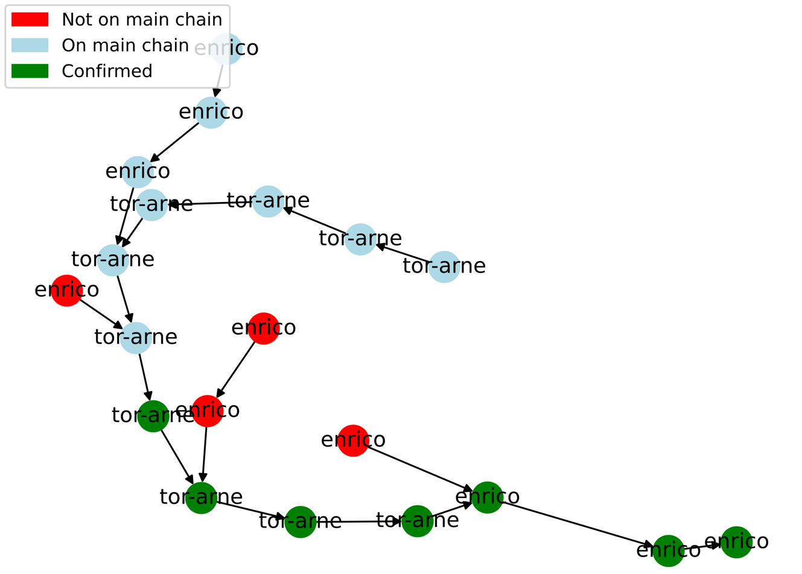

Bitcoin is a decentralized digital currency that has revolutionized the way we think about money and financial transactions. One of the key features that sets Bitcoin apart from traditional currency is its use of a technology called blockchain, which allows for secure and transparent transactions without the need for a central authority. At the heart of the Bitcoin system is the concept of Proof of Work, a computational algorithm that ensures the security and integrity of the blockchain. In this process, miners compete to solve complex mathematical problems in order to add new blocks to the blockchain, and are rewarded with newly created bitcoins for their efforts. The use of Proof of Work has made Bitcoin one of the most secure and widely used digital currencies in the world, and has paved the way for a new era of decentralized finance and innovation.
This assignment entails the task of mining Bitcoin blocks in accordance with the guidelines of the Proof of Work protocol. To maintain the focus of this assignment, the use of a p2p network substrate has been excluded to avoid unnecessary issues. Instead, each candidate will act as a client, and a server will be at your disposal for block verification. The process of mining a block in the Bitcoin blockchain is associated with a reward in the form of Bitcoin. At the culmination of the competition, the participant with the highest number of successfully mined blocks will be recognized as the winner, but be careful of not melting your GPUs! For this task, you have to work in groups of 2-3 people.
The following section contains pertinent information regarding blockchain and Proof of Work. If you are not familiar with such concepts, please read it thoroughly. A list recommended papers is listed below [1-6].
A blockchain is a distributed digital ledger of transactions that is maintained by a network of computers, rather than a central authority. It is a continuously growing list of blocks, each containing a timestamp and a cryptographic link to the previous block, forming a chain of blocks hence the name "blockchain". Once recorded, the data in any given block cannot be altered retroactively without the alteration of all subsequent blocks, which requires consensus of the network majority. Blockchains utilize different types of consensus mechanisms to reach agreement and validate transactions across the network. This makes blockchains resistant to modification and ensures the integrity of the data they contain.
The most well-known consensus mechanisms are Proof of Work [1] (Bitcoin), Proof of Stake [2-3] (Ethereum, Avalanche), BFT blockchains [5] (Algorand, Ripple Stellar), and Proof of Storage [6] (Filecoin). In a Proof of Work system, miners compete to solve complex mathematical problems to validate transactions and add new blocks to the blockchain. Proof of Stake, on the other hand, instead of miners involves validators being chosen based on their ownership of the native cryptocurrency of the blockchain. This reduces the energy consumption and hardware requirements compared to Proof of Work. In a Byzantine Fault Tolerant blockchain, nodes in the network must reach a consensus on the state of the blockchain even in the presence of faulty or malicious nodes. Such consensus algorithms typically involve a higher degree of redundancy and communication overhead compared to Proof of Work or Proof of Stake. Finally, Proof of Storage requires users to prove that they have stored data reliably and for a specific amount of time. Each consensus mechanism has its own strengths and weaknesses, and the choice of mechanism can significantly impact the security, efficiency, and scalability of the blockchain network. This assignment is predicated on the largest operational blockchain, namely Bitcoin, which relies on a consensus mechanism based on the Proof of Work algorithm.
Proof of Work is the consensus mechanism used by Bitcoin. The basic idea behind Proof of Work is to require participants, called miners, to perform a computationally intensive task in order to create a new block of transactions on the blockchain. This task is designed to be difficult, requiring a significant amount of computational power and energy, in order to ensure that the miner has expended real resources and has a legitimate interest in maintaining the integrity of the network. Once a miner has completed the task, they broadcast the new block to the network, and other nodes on the network can verify the Proof of Work and add the block to their own copy of the blockchain. Miners are incentivized to participate in the process through a reward system, typically in the form of newly created cryptocurrency that is awarded to the miner who successfully creates a new block. To elaborate, a miner's task is to perform double hashing on the block header, consisting of the previous block hash, timestamp, and Merkle root, together with a nonce. This process continues until the hash falls below the specified target, which is also known as difficulty. The miner increments the nonce until a matching hash is discovered.
+----------------+
| Block Header | <--- Previous Block Hash + Timestamp + Merkle Root
+----------------+
|
| +---------------+ +-------------+ +-------------------+
+ ------>| Double Hash |------>| is valid? |--YES->| reward 6.25 BTC |
| +---------------+ +-------------+ +-------------------+
| |
+----------------+ |
| Nonce |<------------ +1 ------------ NO
+----------------+
The security of the Proof of Work lies in the fact that each new block's hash is computed using a cryptographic function that incorporates the root of a Merkle tree, which consists of all the transactions within the block.
In the context of Proof of Work, a Merkle tree is a data
structure used to efficiently summarize all the transactions
(t1, t2, t3, t4 in the graph below)
included in a block. In Bitcoin, for example, every block contains
a list of transactions, and in order to perform Proof of Work,
miners must hash the block header along with a nonce value until
a suitable hash is found. Instead of hashing every transaction
in the block individually, which can be time-consuming and
inefficient, a Merkle tree is used to aggregate all the transactions
into a single hash.
R=h(H1+H2)
/ \
H1=h(t1+t2) H2=h(t3+t4)
/ \ / \
h(t1) h(t2) h(t3) h(t4)
A Merkle tree works by recursively hashing (h function in
the graph above) pairs of transactions together until a
single hash value is obtained, known as the Merkle
root (R in the graph). The Merkle root is then included in
the block header along with other information such as the timestamp,
nonce, and previous block hash. By including the Merkle root in the
block header, it is possible to prove that a particular transaction
is included in the block without having to include the entire list
of transactions. This is useful for verifying the validity of a
block without having to download and process all the transactions
included in it, which can save time and computing resources.
In summary, the Merkle tree is a key component of the Proof of Work consensus mechanism because it allows for efficient verification of the transactions included in a block, which in turn enables miners to perform Proof of Work more efficiently.
This section offers a comprehensive elucidation of the pre-code structure, the necessary prerequisites for executing it, and detailed instructions on how to run it. Additionally, it includes illustrative examples of runtime instances.
While the code has been developed in Python 3.7.9,
it is expected to be compatible with any subsequent versions
without issues. The requirements.txt file contains a
list of all the necessary packages and libraries required
to execute the code. It is strongly recommended using a
virtual environment when working with this project.
To create a new virtual environment, you can run the following command:
python -m venv my_venv
After creating the virtual environment, activate it using:
source my_venv/bin/activate
Once you have activated the virtual environment, you can proceed to install the required packages by running:
pip install -r requirements.txt
The code functions as a simple Client/Server application,
utilizing Flask 2.2.2 as a lightweight web application
framework for facilitating Client/Server communication,
while SQLite3 serves as a relational database management
system that is employed for the purpose of storing user-related
data. The client is able to establish a connection and communicate
with the server by utilizing pre-defined API endpoints. This allows
the user to perform local block mining, and subsequently submit
the block to the server for verification. Additionally, the API
endpoints provide functionality for retrieving information pertaining
to the current status of the blockchain, user data, and visualization
tools that enable the monitoring of the competition's progression.
Download the pre-code here and acquaint yourself with its structure. The scripts and folders are depicted below for your reference (#TODO are the scripts you can/should edit):
.
├── README.md
├── requirements.txt
├── src
│ ├── abstractions
│ │ ├── block.py
│ │ ├── transaction.py
│ │ └── user.py
│ ├── backbone
│ │ ├── consensus.py--#TODO
│ │ └── merkle.py-----#TODO
│ ├── main.py-----------#TODO
│ ├── server
│ │ └── __init__.py---#TODO
│ └── utils
│ ├── conversions.py
│ ├── cryptographic.py
│ ├── flask_utils.py
│ └── view.py
└── vis
├── blockchain
│ └── blockchain.pkl
└── users
├── user_pbk.pem
├── user_pvk.pem
└── users.db
The src directory contains all the pre-existing code required
for the project.
abstractions subdirectory contains data structures that
represent blocks, transactions, and users. These scripts are not
to be altered.backbone subdirectory contains scripts related to consensus
and the Merkle tree for transactions. It is the responsibility of
the candidate to implement the backbone of the blockchain, which
includes the Proof of Work and the Merkle tree.server subdirectory only requires the importation of
constants and Flask calls to the server.utils subdirectory contains essential scripts that enable
Client/Server communication, the visualization of users, blocks,
and blockchains, and the cryptographic functions that the candidate
must utilize to have their block verified.main.py is the script to run.The vis directory stores data that is useful for visualizing
the project's execution at runtime.
blockchain subdirectory stores a pickle representation
of the blockchain, which the candidate should become familiar with.users subdirectory houses both the user database and the
public/private key of a specific client.It is imperative to configure and adjust several key
features before executing the main.py script:
src/server/__init__.py within the SELF constant (e.g.
SELF = 'abc123').vis/users/ directory.ADDRESS is set to ete011@inf3203.cs.uit.no.main.py by running it from the src/ directory.
You can start running the command python main.py -h, to check all available
commands.In this particular blockchain implementation, verification is
carried out utilizing the rsa framework. It is required that
each transaction is signed using the sender's private key,
and subsequently verified using the sender's public key by the
recipient. The public/private key pair also plays a crucial
role in signing the block that has been recently mined with
the corresponding username. By doing so, once the block has
been confirmed (after a period of 6 blocks), the reward will
be granted to the user.
To get your public/private keys, you need to send your group
username as specified earlier to mohsin.khan@uit.no
or dominik.thamm@uit.no.
Once the private and public keys have been acquired and
saved in vis/users/, the candidate shall implement and read
the server's reply to GET_USERS call so that python main.py -i u returns:
+-------------------------------------------------------------------------------------+
| Users INFO |
+----------+---------+---------------+--------------+------------------+--------------+
| username | address | balance (BTC) | mined blocks | confirmed blocks | reward (BTC) |
+----------+---------+---------------+--------------+------------------+--------------+
| enrico | cf14e63 | 1000.0 | 2 | 0 | 0.0 |
| aril | e6586e7 | 1000.0 | 0 | 0 | 0.0 |
+----------+---------+---------------+--------------+------------------+--------------+
The candidate is advised to
familiarize themselves with the sign and verification
implementations that are utilized from the User class.
The callable endpoints, which are located in the
src/server/__init__.py file, are listed below.
It is expected that the candidate will implement a
POST request using BLOCK_PROPOSAL for mining,
and will either generate their own transactions
(it is worth noting that a user can only generate
transactions with itself as sender) or
request them from the server pool via the REQUEST_TXS
endpoint. Additionally, they may employ GET requests
such as GET_USERS, GET_BLOCKCHAIN, or GET_DATABASE
endpoints in order to acquire network status, user data, and
blockchain-related information. REQUEST_DIFFICULTY is
already implemented.
BLOCK_PROPOSAL = 'block_proposal'
GET_BLOCKCHAIN = 'get_blockchain'
GET_USERS = 'get_users'
REQUEST_TXS = 'request_txs'
GET_DATABASE = 'get_database'
REQUEST_DIFFICULTY = 'request_difficulty'
Various endpoints can be accessed via a simple command-line
interface (CLI) menu, which is detailed below. Alternatively,
by executing the command main.py -h, a list of different
options will be presented. In order to avoid relative folder
paths issues, execute the code from src/ directory.
"""
Usage:
-h : display usage information
-i [b, u] : display information for blocks or users #TODO
-t : request N transactions #TODO
-m : mine a block #TODO
-v b : visualize blockchain, saved to vis/blockchain/blockchain.pdf
-d : request DIFFICULTY level
"""
By executing the command main.py -v b, it is possible to retrieve
the latest blockchain state in a graphical format. In case the
visualization seems unclear, one can refresh it to obtain a better
representation. This is an example of the generated pdf:

Embedded within each class abstraction are methods for marshaling
and unmarshaling, which facilitate the exportation of object
instances in memory to other machines. These methods are
implemented as to_dict() and load_json(). To initiate a
server request, the flask_call() function can be utilized.
The following are some examples:
# marshal
block_serialized = block.to_dict()
msg, data, code = flask_call('POST', BLOCK_PROPOSAL, data=block_serialized)
# unmarshal
msg, block_serialized, code = flask_call('GET', BLOCK) # Just an example, not an actual call
block_deserialized = Block.load_json(json.dumps(block_serialized))
In order to successfully complete this assignment, the candidate must complete both practical and theoretical tasks. If the minimum requirements are not met, the candidate must provide a comprehensive explanation. If the candidate encounters difficulties with coding, they should document their attempts and provide an explanation in their report.
Upon downloading the code from here, the candidate is required to perform the following tasks:
GET_BLOCKCHAIN
and GET_USERS. Commands python main.py -i [b, u];REQUEST_TXS calls for mining new blocks. Command python main.py -t;src/backbone/merkle.py;src/backbone/consensus.py. Command python main.py -m;Note that the hash_function() is used for verification server-side in
the Merkle tree, while double_hash() is used for Proof of Work.
Both functions can be found in src/utils/cryptographic.py, and the order
for double hashing a block header is the following:
The starting difficulty is set at 6.
The report must present a comprehensive description of the approach employed by the candidate to solve the given problem. It should include a detailed explanation of their Proof of Work algorithm, demonstrating their understanding of how this consensus mechanism operates. If the candidate encountered any issues in their attempts to mine a block, these should be documented thoroughly in the report. For the report, the candidate should use the IEEE conference template, and the report must not be less than 5 pages long. The report should cover the following topics:
Wishing you the best of luck! If you have any inquiries, please feel free to contact us via email at mohsin.khan@uit.no or dominik.thamm@uit.no or visit me at my office in A214.
[1] Satoshi Nakamoto. Bitcoin: A Peer-to-Peer Electronic Cash System, 2008. Available here
[2] Vitalik Buterin. "A next-generation smart contract and decentralized application platform." white paper 3.37 (2014): 2-1. Available here
[3] Emin Gün Sirer, Kevin Sekniqi, and others, "Avalanche: A Novel Metastable Consensus Protocol Family for Cryptocurrencies", 2018. Available here
[4] Aggelos Kiayias, Alexander Russell, Bernardo David, and Roman Oliynykov, Ouroboros: A Provably Secure Proof-of-Stake Blockchain Protocol", 2017. Available here
[5] Yossi Gilad, Rotem Hemo, Silvio Micali, Georgios Vlachos, and Nickolai Zeldovich. 2017. Algorand: Scaling Byzantine Agreements for Cryptocurrencies. In Proceedings of the 26th Symposium on Operating Systems Principles (SOSP '17). Association for Computing Machinery, New York, NY, USA, 51–68. Available here
[6] Benet, J. (2017). Filecoin: A Decentralized Storage Network. Available here